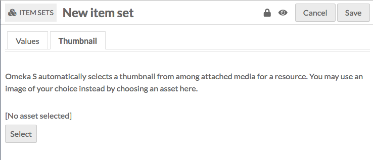
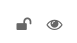

Les collections sont une agrégation de contenus, similaires aux collections des versions précédentes d'Omeka. Dans Omeka S, les contenus peuvent appartenir à un nombre illimité de collections, et une collection peut comporter un nombre illimité de contenus. Les collections sont gérées via l'onglet Collections (cases empilées) situé dans le panneau de navigation de gauche.

<<<<<<< HEAD ======= Après avoir cliqué sur l'onglet, un tableau apparaît répertoriant toutes les collections avec:
[FR] Traduction française - fr-v0.1
- leur titre;
- des icônes pour chaque ligne représentant des options pour modifier (crayon), supprimer (corbeille) ou afficher les détails (trois petits points);
- la classe de la collection,
- le propriétaire de la collection,
- et quand la collection a été créé.
Au-dessus de ce tableau, à gauche, se trouve la pagination du tableau des collections, dans laquelle vous pouvez cliquer sur les flèches gauche et droite pour avancer ou reculer ou entrer un numéro de page pour accéder à une page spécifique de collections.
Au centre au-dessus du tableau se trouve le bouton pour la recherche avancée.
À droite au-dessus du tableau, des menus déroulants vous permettent de réorganiser le tableau par titre, classe, propriétaire, ou date créée dans l'ordre croissant ou décroissant.
Dans le coin supérieur droit se trouve le bouton pour Ajouter une nouvelle collection.
Voir les collections
Pour afficher rapidement des informations sur une collection, cliquez sur le bouton (trois petits points) pour afficher la collection sur la page de navigation. Cela ouvrira un onglet sur le côté droit de la page avec le titre, la visibilité et le nombre de contenus appartenant à la collection.

Pour afficher toutes les informations d'une collection, cliquez sur son nom. Sur la page de la collection, des onglets permettent de voir les métadonnées et ressources liées d'une collection. Sur le côté droit de la page d’affichage, vous trouverez des informations sur la date de création, le propriétaire et la visibilité. Pour les collections la visibilité inclut à la fois si la collection est privée ou publique et si d'autres utilisateurs peuvent ajouter des contenus à la collection.
<<<<<<< HEAD
 =======
=======

[FR] Traduction française - fr-v0.1
Les métadonnées d'une collection sont entrées par les utilisateurs.
<<<<<<< HEAD
 =======
Les ressources liées sont des contenus qui sont liés à la collection par des métadonnées spécifiques. Lors de l'affichage des ressources liées, la table inclut le propriétaire (propriété ou description) et l'objet. Notez que les ressources entrantes (celles utilisées comme propriétés pour la collection en cours de visualisation) ne seront pas affichées ici, car elles s'affichent déjà dans les métadonnées de la collection.
=======
Les ressources liées sont des contenus qui sont liés à la collection par des métadonnées spécifiques. Lors de l'affichage des ressources liées, la table inclut le propriétaire (propriété ou description) et l'objet. Notez que les ressources entrantes (celles utilisées comme propriétés pour la collection en cours de visualisation) ne seront pas affichées ici, car elles s'affichent déjà dans les métadonnées de la collection.
[FR] Traduction française - fr-v0.1
Pour afficher les contenus d'une collection, cliquez sur le nombre de contenus sur la page de navigation ou cliquez sur le bouton Afficher les contenus dans le coin supérieur droit de la page.
Ajouter une collection
Pour ajouter une nouvelle collection, cliquez sur l'onglet Collection dans la barre de navigation de gauche du tableau de bord. Cliquez sur le bouton ajouter une nouvelle collection en haut à droite de l'écran.
Les collections peuvent utiliser les mêmes modèles de ressources que les contenus afin de fournir des champs présélectionnés. Chaque collection doit contenir au moins une valeur descriptive, telle que Dublin Core Description.
Vous pouvez ajouter d'autres champs en sélectionnant une propriété dans la liste de droite. Parcourez les champs par vocabulaire (Dublin Core, ontologie bibliographique, etc.) ou recherchez-le dans la barre filtrer les propriétés au-dessus de la liste des propriétés et des vocabulaires.
Onglet "Valeurs"
Vous pouvez ajouter du texte, une ressource Omeka ou un lien externe dans chaque champ.

Par défaut, une nouvelle collection sera chargée avec les propriétés dcterms: Title et dcterms: description. Vous pouvez ajouter d'autres champs en sélectionnant une propriété dans la liste de droite. Parcourez les champs par vocabulaire (Dublin Core, ontologie bibliographique, etc.) ou recherchez-le dans la barre filtrer les propriétés au-dessus de la liste des propriétés et des vocabulaires.
Vous pouvez définir des propriétés individuelles comme privées ou publiquement visibles à l'aide de l'icône en forme d'œil pour chaque propriété. Notez que les propriétés définies comme privées sont toujours visibles par les administrateurs globaux, les administrateurs de site et les éditeurs pourront voir les propriétés même lorsqu'elles sont définies comme privées. Les auteurs pourront voir toutes les propriétés des objets qu’ils possèdent, mais ne verront pas les propriétés privées créées par d’autres utilisateurs.
<<<<<<< HEAD
By default, a new Item Set will load with the properties dcterms:Title and dcterms:description. You may add other fields by selecting a property from the list on the right. Browse fields by vocabulary (Dublin Core, Bibliographic Ontology, etc), or search in the filter properties bar above the list of properties and vocabularies.
You can set individual properties as Private or Publicly visible using the eye icon for each property. Note that properties set to private are still visible to Global Admins, Site Admins, and Editors will be able to see properties even when set to private. Authors will be able to see all properties on items they own, but will not see private properties created by other users.
In the image below, the first property (Title) is public as indicated by the open eye icon. The second property (Description) is private as indicated by the slashed-through eye icon. Clicking or hitting enter on the eye icon toggles between public and private.

Dans l'image ci-dessous, la première propriété (Titre) est publique, comme l'indique l'icône en forme d'œil ouvert. La deuxième propriété (Description) est privée, comme l'indique l'icône en forme de barre oblique. En cliquant ou en appuyant sur entrer sur l'icône de l'œil, vous basculez entre public et privé.

[FR] Traduction française - fr-v0.1
Texte
Les champs de texte sont réservés à du texte. Le clavier en haut du champ indique qu'il s'agit d'un champs "texte". Vous pouvez indiquer la langue du contenu d'une entrée à l'aide du symbole du globe situé au-dessus de l'entrée (voir la flèche rouge dans l'image ci-dessous). Cliquez sur le globe pour activer un champ de texte, puis entrez le code ISO 639-1 de la langue dans laquelle le texte est écrit.
Ressource Omeka
Ces champs créent un lien interne entre la ressource que vous créez et la ressource qui remplit ce champ. Vous avez la possibilité d'utiliser un autre contenu ou une collection. Une fois que vous avez sélectionné un contenu ou une collection, des informations détaillées seront chargées et vous devez cliquer sur sélectionner une ressource pour terminer la liaison des ressources. Vous pouvez également cliquer sur le bouton X dans le coin supérieur droit pour revenir à la liste des contenus ou collections.
Lors de la création d'une collection, vous avez la possibilité d'utiliser un autre contenu ou une autre collection.
Le choix d'un type de ressource ouvrira un onglet latéral dans lequel vous pourrez parcourir toutes les types de ressources de l'instance. Vous pouvez utiliser la fonction de recherche en haut de l'onglet pour réduire la liste ou pour trouver rapidement un contenu ou une collection.
<<<<<<< HEAD
=======

[FR] Traduction française - fr-v0.1
Si vous utilisez un contenu pour la propriété, vous aurez d'autres options pour rechercher l'élément souhaité dans l'onglet dédié. Ouvrez ces options en cliquant sur le triangle situé à côté de la phrase "Filtre de recherche".
<<<<<<< HEAD
=======

[FR] Traduction française - fr-v0.1
Cela ouvrira un menu sous le bouton avec les options suivantes pour filtrer les éléments dans le tiroir:
- Filtrer par classe: une liste déroulante dans laquelle vous pouvez sélectionner n’importe quelle classe fournie par les vocabulaires de l’instance;
- Filtrer par collection: une liste déroulante dans laquelle vous pouvez limiter les contenus affichés dans l'onglet à ceux associés à une collection particuliere.
- Filtrer par ID de contenu: un champ de recherche dans lequel vous pouvez saisir l'identifiant du contenu que vous souhaitez utiliser. Vous pouvez trouver l'ID d'un contenu dans l'url de sa page de modification; Si vous modifiez le contnu et que l'URL est
admin / item / 11547 / edit, l'ID de l'élément est 11547.
<<<<<<< HEAD
 =======
=======

[FR] Traduction française - fr-v0.1
Les collections ont également une option pour "Ajout rapide". Lorsque cet interrupteur est activé, tous les contenus de l'onglet se retrouvent affichés avec une case à cocher. Vous pouvez utiliser ces cases à cocher pour ajouter plusieurs contenus à la fois en tant que propriété. Notez que vous ne pouvez modifier qu'une propriété à la fois, de sorte que tous les contenus doivent renseigner la même propriété (ex, Creator, Has Part).
<<<<<<< HEAD

URI
URI fields link to an external website or online resource.
You may add other fields by selecting a property from the list on the right. Browse fields by vocabulary (Dublin Core, Bibliographic Ontology, etc), or search in the filter properties bar above the list of properties and vocabularies.
Advanced tab
By default, Omeka S will use the media from the first item added to an item set to generate a thumbnail for the set. If you want to use a non-media image for the thumbnail for an item set you can set it here.

The assets you select from and upload as thumbnails in this tab are the same as those created for site logos.

URI
Les champs URI renvoient à un site Web externe ou à une ressource en ligne.
Vous pouvez ajouter d'autres champs en sélectionnant une propriété dans la liste de droite. Parcourez les champs par vocabulaire (Dublin Core, ontologie bibliographique, etc.) ou recherchez-le dans la barre filtrer les propriétés au-dessus de la liste des propriétés et des vocabulaires.
Onglet Vignette
Par défaut, Omeka S utilisera le support du premier élément ajouté à une collection pour générer la vignette illustrant cette collection. Si vous souhaitez utiliser une autre image vous pouvez la définir ici.
[FR] Traduction française - fr-v0.1

<<<<<<< HEAD ======= Les ressources que vous avez sélectionnées et téléchargées sous forme de vignettes dans cet onglet sont les mêmes que celles créées pour les logos du site.
[FR] Traduction française - fr-v0.1
Pour attribuer une vignette, cliquez sur le bouton Sélectionner dans la zone de travail principale de l'onglet. Cela ouvrira un onglet sur le côté droit.
<<<<<<< HEAD
=======

[FR] Traduction française - fr-v0.1
L'onglet propose deux options: télécharger un fichier à l'aide de votre navigateur ou sélectionner des ressources existantes. Pour sélectionner une ressource existante, cliquez simplement dessus et elle sera automatiquement attribuée à la collection.

Pour supprimer une vignette, cliquez sur le bouton "Effacer" situé sous l’image de la ressource. Pour la remplacer, cliquez sur Sélectionner et choisissez ou chargez une nouvelle vignette.
<<<<<<< HEAD Use the make public/private button (eye icon) to make the item set visible to the public or only to all users of the Omeka S installation (not public). =======
[FR] Traduction française - fr-v0.1
Paramètres d'accès
Les collections ont deux paramètres qde contrôle d'accès. Elles peuvent être publiques ou privées et elles peuvent être ouvertes ou fermées.
Utilisez le bouton Rendre public / privé (icône en forme d’œil) pour rendre l’élément visible au public ou uniquement à tous les utilisateurs de l’installation Omeka S (privé).
<<<<<<< HEAD  Open and Public
 Closed and Private
Closed and Private
Les collections ouvertes peuvent être modifiées et complétées par n'importe quel utilisateur.
Les collections fermées sont disponibles et modifiables uniquement par son créateur, les administrateurs du site et les administrateurs globaux.
[FR] Traduction française - fr-v0.1
 Open and Public
Open and Public
 Closed and Private
Closed and Private
Notez que les paramètres public / privé et ouvert / fermé fonctionnent indépendamment - vous pouvez définir un élément ouvert et privé, par exemple.
Editer une collection
Une fois que vous avez créé une collection, vous pouvez la modifier à tout moment, en cliquant sur l'icône d'édition (bouton du crayon) ou en cliquant sur le titre de la collection, puis en cliquant sur le bouton Modifier dans le coin supérieur droit de l'écran.
<<<<<<< HEAD
 =======
Les options pour l'édition d'une collection sont les mêmes que pour la création d'une collection.
Pour annuler les modifications, cliquez sur le bouton Annuler dans le coin supérieur droit, entre les boutons Supprimer et Enregistrer.
=======
Les options pour l'édition d'une collection sont les mêmes que pour la création d'une collection.
Pour annuler les modifications, cliquez sur le bouton Annuler dans le coin supérieur droit, entre les boutons Supprimer et Enregistrer.
[FR] Traduction française - fr-v0.1

Traitement en lot
<<<<<<< HEAD
 =======
À partir de la page de navigation des collections (admin / collections), vous pouvez éditer des collections par lot à l’aide du menu déroulant situé dans le coin supérieur droit de la page située sous le bouton "Ajouter une nouvelle collection". Vous pouvez sélectionner plusieurs collections à l'aide des cases à cocher situées à gauche de chaque ligne.
=======
À partir de la page de navigation des collections (admin / collections), vous pouvez éditer des collections par lot à l’aide du menu déroulant situé dans le coin supérieur droit de la page située sous le bouton "Ajouter une nouvelle collection". Vous pouvez sélectionner plusieurs collections à l'aide des cases à cocher situées à gauche de chaque ligne.
[FR] Traduction française - fr-v0.1

Les actions par lot sont les suivantes:
- Modifier sélectionnés: modifiez uniquement les collections sélectionnées sur la page.
- Modifier tout: éditez toutes les collections renvoyées par une recherche (par défaut, toutes les collections)
- Supprimer sélectionnés: supprime uniquement les collections sélectionnées sur la page.
- Supprimer tout: supprime toutes les collections renvoyées par une recherche (par défaut, toutes les collections) Choisissez l'une de ces options, puis cliquez sur Traiter.
L'édition par lot des collections vous amène à une nouvelle page. Les collections en cours d'édition seront affichées à droite dans un onglet, tandis que le formulaire de modification par lot vous offre les options suivantes:
- visibilité de l'ensemble: une liste déroulante, sélectionnez Public ou Non Public.
- définir l'ouverture: une liste déroulante, sélectionnez Ouvert ou Non ouvert.
- définir le modèle: une liste déroulante, sélectionnez parmi les modèles de ressources de l'instance.
- définir une classe: une liste déroulante, sélectionnez parmi les classes de vocabulaires installés.
- effacer les valeurs d'une propriété: un menu déroulant contenant toutes les propriétés de tous les vocabulaires. En sélectionnant cette option, toutes les valeurs de cette propriété seront supprimées des collections concernées. Effacer les propriétés supplémentaires cliquant une nouvelle fois dans le champs.
<<<<<<< HEAD
 =======
=======

[FR] Traduction française - fr-v0.1
De plus, vous pouvez utiliser le bas du formulaire de modification par lot pour ajouter des propriétés à chaque ensemble d'éléments:
- ajouter une valeur textuelle
- ajouter un lien vers une ressource
- ajouter une lien URI
La sélection de ces éléments ajoutera un bloc au formulaire dans lequel vous pourrez sélectionner une propriété parmi les vocabulaires installés et entrer la valeur de cette propriété.
<<<<<<< HEAD
 =======
=======

[FR] Traduction française - fr-v0.1
Pour les actions de suppression, un onglet s'ouvre sur le côté droit de l'écran pour vous indiquer le nombre de collections à supprimer. Rien ne sera supprimé à moins que vous ne cliquiez sur le bouton rouge Confirmer la suppression. Cette action ne peut pas être annulée. Pour refuser de supprimer les collections, cliquez sur le X dans le coin supérieur droit de l'onglet de suppression. Pour confirmer la suppression, cochez la case "Êtes-vous sûr", puis cliquez sur Confirmer la suppression. Notez que la suppression d'une collection ne supprimera pas les contenus associés à cette collection.
<<<<<<< HEAD
 =======
=======

[FR] Traduction française - fr-v0.1
Supprimer une collection
Outre la fonction de suppression par lot décrite ci-dessus, vous pouvez également supprimer des collections individuellement.
Notez que la suppression des collections ne supprime aucun contenu associé aux collections supprimées.
Dans l'écran Collections, vous pouvez supprimer une collection en cliquant sur l'icône corbeille sur la ligne correspondante à la collection que vous souhaitez supprimer. Cela ouvrira un onglet sur la droite avec un message en haut vous demandant de confirmer que vous souhaitez supprimer la collection avec les métadonnées pour la collection situées sous le bouton de confirmation de suppression. Cliquez sur Confirmer la suppression pour supprimer la collection ou fermez l'onglet pour annuler.
<<<<<<< HEAD


[FR] Traduction française - fr-v0.1
Dans la page d'édition d'une collection, cliquez sur le bouton Supprimer dans le coin supérieur droit. Cela ouvrira un onglet sur le côté droit vous demandant de confirmer que vous souhaitez supprimer la collection. Cliquez sur Confirmer la suppression pour supprimer la collection ou fermez l'onglet pour annuler.
<<<<<<< HEAD
 =======
=======

[FR] Traduction française - fr-v0.1